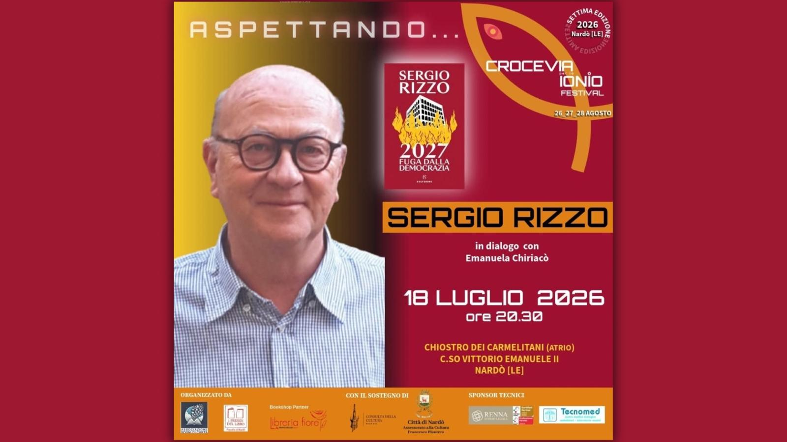

Aspettando... Crocevia per lo Ionio Festival — terzo e ultimo appuntamento
Sergio Rizzo presenta 2027. Fuga dalla democrazia (Solferino Libri), un romanzo di fantapolitica in cui un'Italia del 2027, travolta dall'astensionismo e da una crisi istituzionale profonda, rischia di scivolare fuori dalla democrazia. Firma storica del giornalismo italiano e autore di saggi come La casta, Rizzo costruisce qui un avvertimento lucidissimo su ciò che potremmo diventare. A dialogare con lui Emanuela Chiriacò, traduttrice editoriale e curatrice della rubrica culturale Terza Pagina per lecceprima.it. Atrio del Chiostro dei Carmelitani — C.so Vittorio Emanuele II, Nardò (LE) Un incontro organizzato da: Associazione Sogni di Carta · Presidio del Libro di Nardò · Libreria Fiore – Mondadori Nardò · Consulta della Cultura di Nardò. Con il patrocinio del Comune di Nardò e del Delegato alla Cultura Francesco Plantera. Sponsor tecnici: Renna Studio Legale · Tecnomed Centro Medico Biologico.